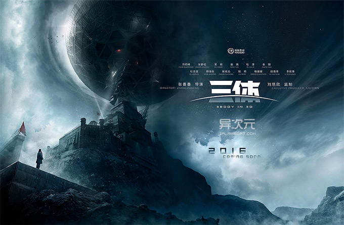

<html ng-app="ionicApp">

<head>
	<meta charset="utf-8">
	<meta name="viewport" content="initial-scale=1, maximum-scale=1, user-scalable=no, width=device-width">

	<title>菜鸟教程(runoob.com)</title>
	<link href="lib/ionic/css/ionic.min.css" rel="stylesheet">
	<script src="lib/ionic/js/ionic.bundle.js"></script>
	<script type="text/javascript">
      angular.module('ionicApp', ['ionic'])

    .config(function($stateProvider, $urlRouterProvider) {

      $stateProvider
        .state('tabs', {
          url: "/tab",
          abstract: true,
          templateUrl: "templates/tabs.html"
        })
        .state('tabs.home', {
          url: "/home",
          views: {
            'home-tab': {
              templateUrl: "templates/home.html",
              controller: 'HomeTabCtrl'
            }
          }
        })
        .state('tabs.facts', {
          url: "/facts",
          views: {
            'home-tab': {
              templateUrl: "templates/facts.html"
            }
          }
        })
        .state('tabs.facts2', {
          url: "/facts2",
          views: {
            'home-tab': {
              templateUrl: "templates/facts2.html"
            }
          }
        })
        .state('tabs.about', {
          url: "/about",
          views: {
            'about-tab': {
              templateUrl: "templates/about.html"
            }
          }
        })
        .state('tabs.navstack', {
          url: "/navstack",
          views: {
            'about-tab': {
              templateUrl: "templates/nav-stack.html"
            }
          }
        })
        .state('tabs.contact', {
          url: "/contact",
          views: {
            'contact-tab': {
              templateUrl: "templates/contact.html"
            }
          }
        });


       $urlRouterProvider.otherwise("/tab/home");

    })

    .controller('HomeTabCtrl', function($scope) {
      console.log('HomeTabCtrl');
    });
    </script>
    <style>
        ion-content{
            background: url(img/bg.png) no-repeat center;background-size:cover;
        }
    </style>
</head>

<body>

	<!--<ion-nav-bar class="bar-positive">
      <ion-nav-back-button>
      </ion-nav-back-button>
    </ion-nav-bar>-->

	<ion-nav-view></ion-nav-view>


	<script id="templates/tabs.html" type="text/ng-template">
      <ion-tabs class="tabs-icon-top">

        <ion-tab title="首页" icon="ion-home" href="#/tab/home">
          <ion-nav-view name="home-tab"></ion-nav-view>
        </ion-tab>

        <ion-tab title="找书" icon="ion-ios-book" href="#/tab/about">
          <ion-nav-view name="about-tab"></ion-nav-view>
        </ion-tab>

        <ion-tab title="我的" icon="ion-ios-person" ui-sref="tabs.contact">
          <ion-nav-view name="contact-tab"></ion-nav-view>
        </ion-tab>

      </ion-tabs>
    </script>

	<script id="templates/home.html" type="text/ng-template">
      <ion-view view-title="Home">
        <ion-content class="padding">
            <button class="button icon-left ion-ios-barcode-outline button-block button-positive">漂流扫码</button>
            
            <div class="list card" id="page2-card24">
            <div class=" item item-image">
            
            </div>
            <ion-item class="item-divider item" id="page2-list-item-divider4"> 必读书目</ion-item>
            <ion-list id="page2-list8" class="disable-user-behavior"><div class="list">
                <ion-item id="page2-list-item25" class="item item-complex" href="#/page1/tab1/items/info">图书1</ion-item>
                <ion-item id="page2-list-item27" class="item">图书2</ion-item>
                <ion-item id="page2-list-item26" class="item">图书3</ion-item>
                <ion-item class="item-divider item" id="page2-list-item-divider3"> 读书心得奖</ion-item>
                <ion-item id="page2-list-item22" ui-sref="tabsController.page12" class="item item-complex" href="#/page1/tab1/article/">一等奖：xxxx</ion-item>
                <ion-item id="page2-list-item23" class="item">二等奖：xxxx</ion-item>
                <ion-item id="page2-list-item24" class="item">三等奖：xxxx</ion-item>
            </div></ion-list>
            </div>

          <p>
            <!--<a class="button icon icon-right ion-chevron-right" href="#/tab/facts">Scientific Facts</a>-->
          </p>
        </ion-content>
      </ion-view>
    </script>

	<script id="templates/facts.html" type="text/ng-template">
      <ion-view view-title="Facts">
        <ion-content class="padding">
          <p>Banging your head against a wall uses 150 calories an hour.</p>
          <p>Dogs have four toes on their hind feet, and five on their front feet.</p>
          <p>The ant can lift 50 times its own weight, can pull 30 times its own weight and always falls over on its right side when intoxicated.</p>
          <p>A cockroach will live nine days without it's head, before it starves to death.</p>
          <p>Polar bears are left handed.</p>
          <p>
            <a class="button icon ion-home" href="#/tab/home"> Home</a>
            <a class="button icon icon-right ion-chevron-right" href="#/tab/facts2">More Facts</a>
          </p>
        </ion-content>
      </ion-view>
    </script>

	<script id="templates/facts2.html" type="text/ng-template">
      <ion-view view-title="Also Factual">
        <ion-content class="padding">
          <p>111,111,111 x 111,111,111 = 12,345,678,987,654,321</p>
          <p>1 in every 4 Americans has appeared on T.V.</p>
          <p>11% of the world is left-handed.</p>
          <p>1 in 8 Americans has worked at a McDonalds restaurant.</p>
          <p>$283,200 is the absolute highest amount of money you can win on Jeopardy.</p>
          <p>101 Dalmatians, Peter Pan, Lady and the Tramp, and Mulan are the only Disney cartoons where both parents are present and don't die throughout the movie.</p>
          <p>
            <a class="button icon ion-home" href="#/tab/home"> Home</a>
            <a class="button icon ion-chevron-left" href="#/tab/facts"> Scientific Facts</a>
          </p>
        </ion-content>
      </ion-view>
    </script>

	<script id="templates/about.html" type="text/ng-template">
      <ion-view view-title="About">
        <ion-content class="padding">
          <h3>Create hybrid mobile apps with the web technologies you love.</h3>
          <p>Free and open source, Ionic offers a library of mobile-optimized HTML, CSS and JS components for building highly interactive apps.</p>
          <p>Built with Sass and optimized for AngularJS.</p>
          <p>
            <a class="button icon icon-right ion-chevron-right" href="#/tab/navstack">Tabs Nav Stack</a>
          </p>
        </ion-content>
      </ion-view>
    </script>

	<script id="templates/nav-stack.html" type="text/ng-template">
      <ion-view view-title="Tab Nav Stack">
        <ion-content class="padding">
          <p></p>
        </ion-content>
      </ion-view>
    </script>

	<script id="templates/contact.html" type="text/ng-template">
      <ion-view title="Contact">
        <ion-content>
          <div class="list">
            <div class="item">
              @IonicFramework
            </div>
            <div class="item">
              @DriftyTeam
            </div>
          </div>
        </ion-content>
      </ion-view>
    </script>

</body>

</html>